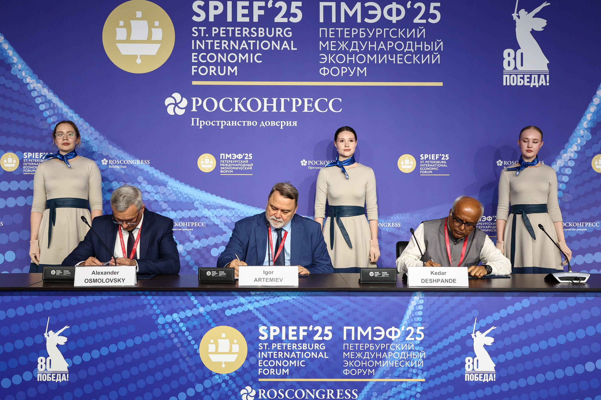

На XXVIII Петербургском международном экономическом форуме 19 июня 2025 года подписана декларация о создании Международной ассоциации товарных и фьючерсных бирж.
Намерение присоединиться к ассоциации выразили: Петербургская Биржа, Национальная товарно-деривативная биржа Индии (National Commodity and Derivatives Exchange Limited, NCDEX), Товарная биржа Ирана (Iran Mercantile Exchange, IME), Синьцзянский Азиатско-Европейский международный торговый центр (Xinjiang Asia-Europe International Material Trading Center, АЕЕХ, Китай), Белорусская универсальная товарная биржа (БУТБ), Товарная биржа «Евразийская Торговая Система» (АО ЕТС, Казахстан), Узбекская республиканская товарно-сырьевая биржа (УзРТСБ).
Декларация закрепляет намерения сторон создать ассоциацию, которая будет способствовать развитию взаимодействия между товарными и фьючерсными биржами стран ЕАЭС+, БРИКС+ и ШОС. Её деятельность будет направлена на координацию усилий по развитию организованных товарных рынков с учетом международных практик, расширение межбиржевого сотрудничества, включая трансграничную торговлю.
Ассоциация также будет содействовать реализации инициативы по созданию международного ценового агентства, призванного обеспечивать формирование объективной и независимой системы ценовых индикаторов на ключевые товарные группы.

Статс-секретарь – замминистра энергетики России Дмитрий Исламов: «Хотел бы от имени Минэнерго России поприветствовать подписание этой Декларации, выразить уверенность в том, что она будет всемерно способствовать развитию международной торговли энергоносителями, прежде всего углем. В качестве успешного примера развития торговых операций: за последние три года объемы угля на Петербургской Бирже выросли втрое. В целом работа ассоциации поднимет планку биржевой торговли на новый уровень».
Президент Петербургской Биржи Игорь Артемьев: «Декларация о создании ассоциации – новый важный шаг в формировании международного биржевого пространства, межбиржевых мостов. Эти линки призваны объединить крупнейшие биржи и торговые площадки стран ЕАЭС+, ШОС, БРИКС. Объединение является полностью открытым для присоединения новых участников. Работа ассоциации важна с точки зрения глобальных изменений в мировой экономике в целом – мы формируем единое информационное пространство и единые ценовые индикаторы».
Главный коммерческий директор Национальной товарно-деривативной биржи Индии Кедар Дешпанде: «Участие биржи NCDEX в инициативе по созданию международной ассоциации товарных и фьючерсных бирж является шагом к устойчивому и долгосрочному сотрудничеству. Являясь ведущей торговой площадкой Индии с богатым опытом в аграрном секторе и развитии биржевых инструментов, мы убеждены, что при поддержке наших регуляторов и интересе бизнес-сообществ с обеих сторон нам удастся реализовать ряд проектов, способных укрепить роль биржевого сектора в международной торговле».
Председатель правления Синьцзянского Азиатско-Европейского международного торгового центра госпожа Чжан Хунпин: «Укрепление связей биржевых платформ европейских и азиатских стран, информационный обмен, вопросы таможенного оформления, финансовых расчетов, логистики способны обеспечить мировое лидерство в трансграничной торговле сырьевыми товарами».
Председатель правления Белорусской универсальной товарной биржи Александр Осмоловский: «Эффективность работы реального сектора экономики и реализация экспортного потенциала белорусских предприятий всегда имели приоритетное значение для БУТБ. Поэтому подписание меморандума – это, прежде всего, новые возможности для участников биржевых торгов из Республики Беларусь. Устранение торговых барьеров, упрощенный доступ к перспективным рынкам, расширение круга деловых партнеров, дополнительные торговые и маркетинговые инструменты – вот что получат наши клиенты благодаря созданию нового межбиржевого объединения, которым планируется охватить страны ЕАЭС+, ШОС и БРИКС+. Иными словами, для нас это не просто декларация о намерениях, а стратегическое решение, направленное на достижение конкретных результатов, главными бенефициарами которых станут белорусские субъекты хозяйствования».
Председатель правления АО «Товарная биржа «Евразийская Торговая Система» Курмет Оразаев: «Казахстан, являясь экспортно ориентированной страной, придает большое значение выстраиванию эффективного взаимодействия с организаторами торговли физическими товарами. Это особенно важно, поскольку балансы как глобальных, так и региональных рынков зависят от казахстанской продукции — в первую очередь сельскохозяйственной, зерновых культур и нефтепродуктов. Как и многие страны в регионе, мы в Казахстане, как товарная биржа, стремимся расширять географию поставок и развивать торгово-экономические связи со странами дальнего зарубежья с целью выстраивания общих рынков».